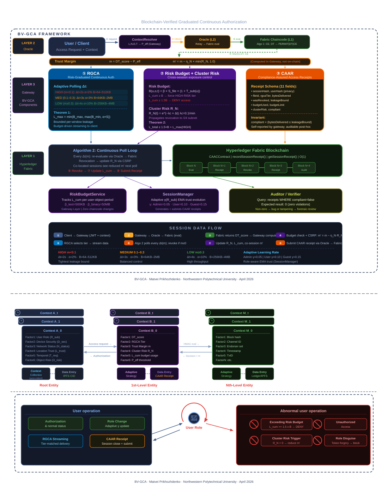

Files are encrypted before IPFS upload. Approved registry entries map file IDs to CIDs, and the gateway decrypts only after authorization and session ownership checks.
Browser submits raw context; gateway derives client IP and resolves L_trust, N_status, D_sec, and T_req.
2
Gateway computes C_O object risk from access count, file size, and upload age, then raises P_req to P_eff.
3
Oracle submits the resolved request to Fabric chaincode through HMAC-signed evaluateAccess.
4
Gateway checks uploader rules, risk-budget admission, anomaly blocks, then opens a session if all gates pass.
Phase 2 — BV-GCA Streaming
while session active: stream encrypted-file plaintext through gateway enforce L(m,S,T_sub,n) window budget on budget exhaustion → immediate chaincode re-eval scheduler polls at 2s / 3s / 4s by adjusted margin on DENY or CSRP escalation → revoke and close receipt
1
Session owner or admin requests the stream; gateway verifies session ownership before any bytes are delivered.
2
RGCA selects HIGH, MEDIUM, or LOW tier from risk margin and sends bytes under a bounded window budget.
3
RevocationScheduler re-evaluates active sessions and applies CSRP subnet risk when related sessions revoke.
4
On close, SessionManager records delivered bytes and submits a CAAR receipt asynchronously through the oracle.
Phase 3 — TRT-BL Budget Control
L(m,S,T,n) = min(B_max, μ·(1+κT)·S^θ·(1+ψn))
G = min(512 KB, S_remaining, 0.5B)
Daily bound: L_total ≤ B + G + S_max
1
RiskBudgetService tracks cumulative user-file exposure per calendar day.
2
At 100% budget, the gateway forces HIGH-RISK delivery even if the trust margin is higher.
3
After B + G is consumed, new access is denied until reset or a new period.
Phase 4 — CAAR Evidence
on session close: hash session ID with full SHA-256 record bytes delivered, tier, risk, bound submit receipt via HMAC-signed oracle call admin can query receipt by session ID
1
Gateway logs local receipt data even if on-chain submission is non-fatal.
2
Oracle writes CAAR evidence through Fabric using recordSessionReceipt.
3
Receipt query endpoint uses the same full SHA-256 session hash for lookup.
BV-GCA framework
Blockchain-Verified Graduated Continuous Authorization — proposed framework architecture with RGCA, risk budget, cluster risk, and CAAR components

Access decision flow
From raw browser context to risk-graduated data delivery
TRT-BL Bounded Streaming
Trust-Rewarded Throughput Allocation under Bounded Leakage: the implemented formula that turns margin, file size, trust, and stable checks into a byte window
Gateway-side controls added around the O(1) chaincode decision path
1
Continuous T_req
Smooth cos² temporal decay replacing binary on/off. Working hours with gradual falloff — no abrupt cliff at boundaries.
2
T_sub Evolution (EMA)
Trust evolves dynamically: T_sub(n+1) = T_sub(n) + γ×(outcome - T_sub(n)). Good sessions build trust, revocations erode it.
3
Object Risk Thresholding
C_O raises P_req when files are large, frequently accessed, or recently uploaded. The effective threshold is sent to chaincode as P_eff.
4
CSRP Cluster Risk
Revocations are recorded per subnet. Related active sessions receive a margin penalty and reset their acceleration when the shared network becomes risky.
5
Budgeted Delivery
RiskBudgetService enforces daily per-user/file exposure. Soft limit forces HIGH-RISK streaming; hard limit denies access until reset.
Security hardening
Defense-in-depth currently present in the gateway, oracle, frontend, storage, and deployment configuration
Identity and Account Protection
BC
BCrypt Authentication
GPU-resistant password hashing with cost factor 12. Transparent migration from legacy hashes on login.
2F
TOTP Two-Factor Auth
RFC 6238 compatible with Google Authenticator. QR code setup, 6-digit verification on every login.
RC
Reset-Code Controls
Admin-issued reset codes are hashed, expire, and are rate-limited by username plus client IP.
MC
Signed Math CAPTCHA
Self-hosted challenge tokens are HMAC-protected and expire server-side. No external CAPTCHA dependency is required for offline demos.
Gateway, Oracle, and Chain Trust
HS
HMAC Oracle Signing
Every gateway-to-oracle request is HMAC-SHA256 signed with timestamp and nonce.
CR
CAAR Receipts
Session closeout evidence is hashed with full SHA-256 and submitted to Fabric through the oracle.
AL
HMAC Audit Logs
Every audit entry is HMAC-signed. Tampered entries are detected during audit loading.
Anomaly logs rotate when they grow too large, keeping single-host deployment storage bounded.
Z
Zero-Trust Architecture
Every layer defaults to DENY on any verification failure. No component trusts input from another without cryptographic verification. The gateway is the only public entry point.